from lokigi.site import SiteProblem
import matplotlib.pyplot as pltIdentifying Areas of Interest with Hotspots, Coldspots and Quadrant Maps
Choropleths are useful tools for helping us to understand how a variable, like deprication, demand or travel times, vary across a region.
However, it can be tricky to pick apart what matters, especially when you have multiple competing priorities.
Hotspots, coldspots, spatial outliers and quadrant maps can help you to zoom in on the areas that might need intervention or that might affect how good a solution is in practice, like areas of high deprivation coupled with poor access, or areas with high demand and high deprivation.
Lokigi provides a number of helper methods that can work with both Problem and SolutionSet classes to help highlight the areas of most and least concern.
For a detailed introduction to hotspots, take a look at the slides from the HSMA masterclass here.
To start, we can set up our problem as normal.
We’ll also import matplotlib to help us with compositing multiple plots together later.
problem = SiteProblem()
problem.add_demand("../../../sample_data/brighton_demand.csv", demand_col="demand", location_id_col="LSOA")
problem.add_sites("../../../sample_data/brighton_sites_existing.geojson", candidate_id_col="site")
problem.add_travel_matrix(
travel_matrix_df="../../../sample_data/brighton_travel_matrix_driving.csv",
source_col="LSOA",
from_unit="seconds",
to_unit="minutes"
)
problem.add_region_geometry_layer(
"https://github.com/hsma-programme/h6_3d_facility_location_problems/raw/refs/heads/main/h6_3d_facility_location_problems/example_code/LSOA_2011_Boundaries_Super_Generalised_Clipped_BSC_EW_V4.geojson",
common_col="LSOA11NM"
)
problem.add_equity_data(
"../../../sample_data/Index_of_Multiple_Deprivation_(Dec_2015)_Lookup_in_England.csv",
equity_col="IMD15",
common_col="LSOA11NM",
label="Indices of Multiple Deprivation",
continuous_measure=True,
reverse=False
)We can now use the .get_hotspots() helper. First, we’ll take a look at demand hotpots.
hotspots_df = problem.get_hotspots(what="demand")/__w/lokigi/lokigi/lokigi/mixins/site_eda.py:147: FutureWarning:
`use_index` defaults to False but will default to True in future. Set True/False directly to control this behavior and silence this warning
We can see that it’s returned a number of additional values, like the local Moran’s I, as well as evaluating whether it’s a significant pattern.
hotspots_df| FID | LSOA11CD | LSOA11NM | LSOA11NMW | BNG_E | BNG_N | LONG | LAT | GlobalID | geometry | LSOA | demand | local_moran_i | p_value | quadrant | cluster_type | |
|---|---|---|---|---|---|---|---|---|---|---|---|---|---|---|---|---|
| 0 | 16356 | E01016849 | Brighton and Hove 026A | Brighton and Hove 026A | 529362 | 104513 | -0.16464 | 50.82570 | 2e95f9d0-9795-4cd4-83d1-3a40898b6c89 | POLYGON ((529551.999 104581, 529547.002 104555... | Brighton and Hove 026A | 1843 | -0.010251 | 0.467 | 2 | Not Significant |
| 1 | 16357 | E01016850 | Brighton and Hove 029A | Brighton and Hove 029A | 529926 | 104360 | -0.15669 | 50.82420 | 74a1b81a-ffc0-4c96-82ef-c63e7ec28eaf | POLYGON ((530066.027 104493.355, 529958.177 10... | Brighton and Hove 029A | 2433 | 0.144585 | 0.204 | 1 | Not Significant |
| 2 | 16358 | E01016851 | Brighton and Hove 029B | Brighton and Hove 029B | 529674 | 104404 | -0.16025 | 50.82465 | a24f39b6-85f2-4ac6-8af8-f8d205b14b58 | POLYGON ((529453.266 104354.713, 529547.002 10... | Brighton and Hove 029B | 2041 | 0.039325 | 0.033 | 1 | Hotspot |
| 3 | 16359 | E01016852 | Brighton and Hove 026B | Brighton and Hove 026B | 529680 | 104641 | -0.16008 | 50.82678 | 9d674ffc-b718-4555-b669-0a5e6dc98129 | POLYGON ((529787.909 104744.63, 529784.999 104... | Brighton and Hove 026B | 2540 | 0.504256 | 0.080 | 1 | Not Significant |
| 4 | 16360 | E01016853 | Brighton and Hove 026C | Brighton and Hove 026C | 529443 | 104770 | -0.16340 | 50.82799 | 7087f545-a012-4c31-afdb-73df930edc2b | POLYGON ((529461.706 104928.879, 529663.936 10... | Brighton and Hove 026C | 2233 | -0.161983 | 0.101 | 4 | Not Significant |
| ... | ... | ... | ... | ... | ... | ... | ... | ... | ... | ... | ... | ... | ... | ... | ... | ... |
| 160 | 16516 | E01017010 | Brighton and Hove 017D | Brighton and Hove 017D | 536120 | 105803 | -0.06826 | 50.83575 | e99d0ceb-67dc-4d7b-ab1f-ab8b58230e95 | POLYGON ((536567.096 105821.386, 536031.682 10... | Brighton and Hove 017D | 1064 | 0.658483 | 0.150 | 3 | Not Significant |
| 161 | 16517 | E01017011 | Brighton and Hove 017E | Brighton and Hove 017E | 537345 | 105806 | -0.05088 | 50.83549 | d60da5d5-da96-4bed-a4e1-f93ffc876538 | POLYGON ((537990.001 104635.399, 537733.25 105... | Brighton and Hove 017E | 2536 | -0.295819 | 0.092 | 4 | Not Significant |
| 162 | 16518 | E01017012 | Brighton and Hove 017F | Brighton and Hove 017F | 535917 | 104786 | -0.07152 | 50.82666 | 91575aee-ce23-436e-b85d-d0a94dbcef74 | POLYGON ((536031.682 105223.601, 536625.001 10... | Brighton and Hove 017F | 1800 | 0.004076 | 0.474 | 3 | Not Significant |
| 163 | 32444 | E01033328 | Brighton and Hove 027F | Brighton and Hove 027F | 531208 | 104687 | -0.13838 | 50.82685 | f80f534f-bb85-49f8-9b67-730ecab28bad | POLYGON ((531414.796 104753.739, 531358 104504... | Brighton and Hove 027F | 2323 | 0.296695 | 0.009 | 1 | Hotspot |
| 164 | 32445 | E01033329 | Brighton and Hove 027G | Brighton and Hove 027G | 530964 | 105059 | -0.14171 | 50.83025 | 7e8f3fd7-9565-455b-9550-5fac52fcb7f4 | POLYGON ((531226.813 104838.69, 530999 104730,... | Brighton and Hove 027G | 2780 | -0.014248 | 0.481 | 4 | Not Significant |
165 rows × 16 columns
We’ll now plot our hotspots. We can see that there are some clusters of high demand near the coast, and some clusters of low demand elsewhere, as well as some outliers (e.g. an area of high demand surrounded by areas of low demand, and vice-versa).
problem.plot_hotspots(hotspots_df=hotspots_df, interactive=False, show_basemap=False)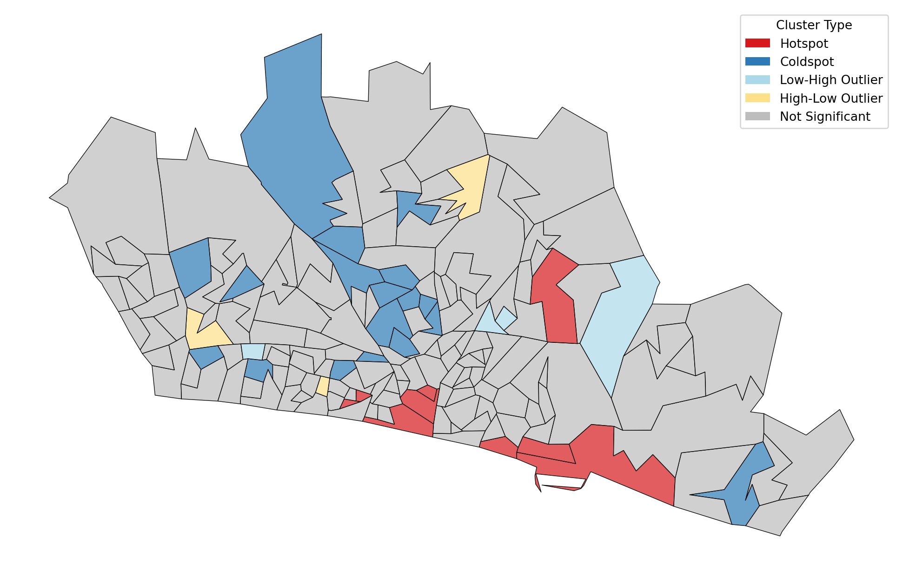
We can hone in on just the hotspots by turning off the display of other categories.
problem.plot_hotspots(hotspots_df=hotspots_df, interactive=False, show_coldspots=False,
show_high_low_outliers=False,show_low_high_outliers=False,
show_non_significance=False, show_basemap=False)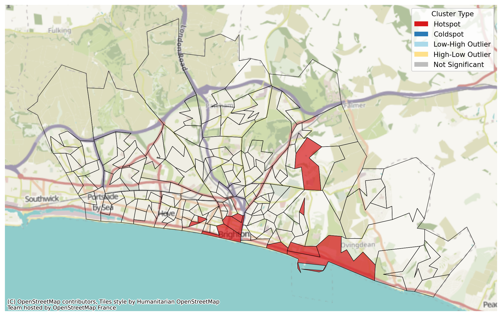
We can also plot an interactive hotspot map, allowing us to interactively turn on and off the areas we are interested in.
problem.plot_hotspots(hotspots_df=hotspots_df, interactive=True)Make this Notebook Trusted to load map: File -> Trust Notebook
Or we can turn them off in code to start the map up with certain areas hidden, though the option to turn them on still exists.
problem.plot_hotspots(hotspots_df=hotspots_df, interactive=True, show_coldspots=False,
show_high_low_outliers=False,show_low_high_outliers=False,
show_non_significance=False)Make this Notebook Trusted to load map: File -> Trust Notebook
Equity
We can also use these plots for equity exploration as we have passed in equity data.
hotspots_equity_df = problem.get_hotspots(what="equity")
problem.plot_hotspots(hotspots_df=hotspots_equity_df, interactive=False)/__w/lokigi/lokigi/lokigi/mixins/site_eda.py:363: UserWarning:
Using cached spatial weights.
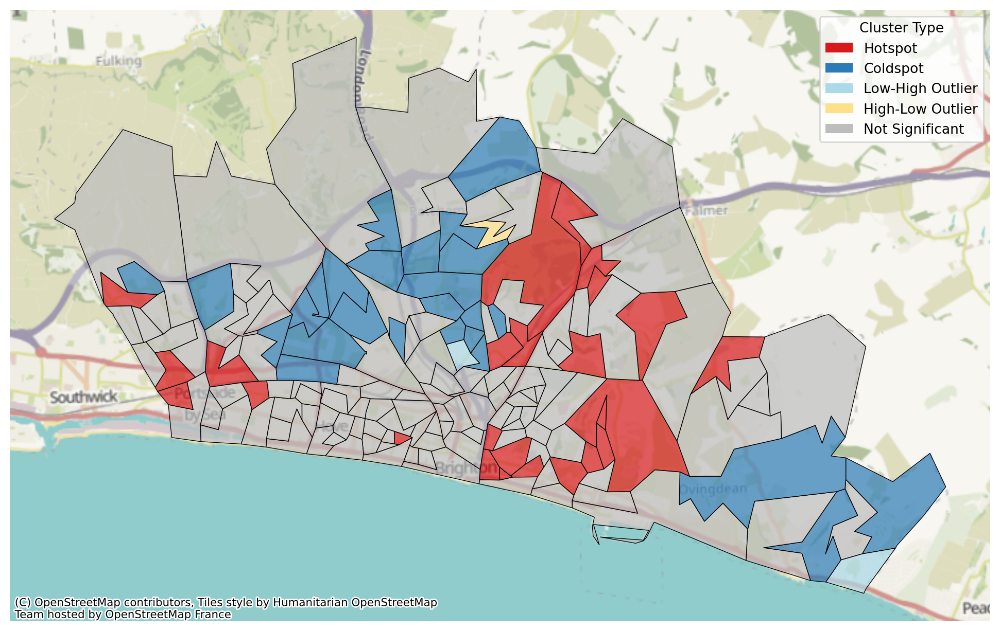
We can combine both plots into a single plot with some additional matplotlib code.
# First we create blank subplots
fig, axes = plt.subplots(1, 2, figsize=(12, 5))
# Now we pass the relevant axis into our plot_hotspots function
problem.plot_hotspots(hotspots_df=hotspots_equity_df, interactive=False, ax=axes[0], show_basemap=False)
problem.plot_hotspots(hotspots_df=hotspots_df, interactive=False, ax=axes[1], show_basemap=False)
# Set the title for each
axes[0].set_title("Equity")
axes[1].set_title("Demand")
# Set an overall title
fig.suptitle("Hotspots", fontsize=16)
plt.tight_layout()
plt.show()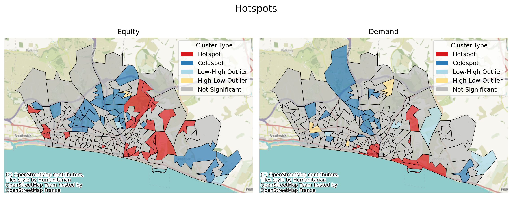
Let’s compare this with the raw underlying data.
# First we create blank subplots
fig, axes = plt.subplots(1, 2, figsize=(12, 5))
# Now we pass the relevant axis into our plot_hotspots function
problem.plot_region_geometry_layer(plot_equity=True, ax=axes[0], plot_region_of_interest_only=True)
problem.plot_region_geometry_layer(plot_demand=True, ax=axes[1])
# Set the title for each
axes[0].set_title("IMD Decile (Lower = More Deprived)")
axes[1].set_title("Demand")
# Set an overall title
fig.suptitle("Hotspots", fontsize=16)
plt.tight_layout()
plt.show()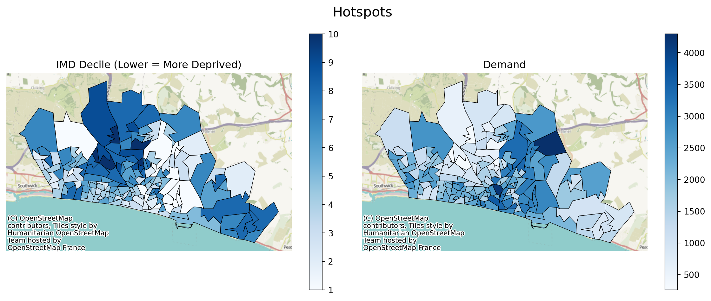
And let’s just compare the hotpot plots to the raw plots too.
# First we create blank subplots
fig, axes = plt.subplots(1, 2, figsize=(12, 5))
# Now we pass the relevant axis into our plot_hotspots function
problem.plot_region_geometry_layer(plot_equity=True, ax=axes[0], plot_region_of_interest_only=True, cmap="Reds_r")
problem.plot_hotspots(hotspots_df=hotspots_equity_df, interactive=False, ax=axes[1])
# Set the title for each
axes[0].set_title("IMD Decile (Lower = More Deprived)")
axes[1].set_title("Equity Hotspots")
# Set an overall title
fig.suptitle("Hotspots", fontsize=16)
plt.tight_layout()
plt.show()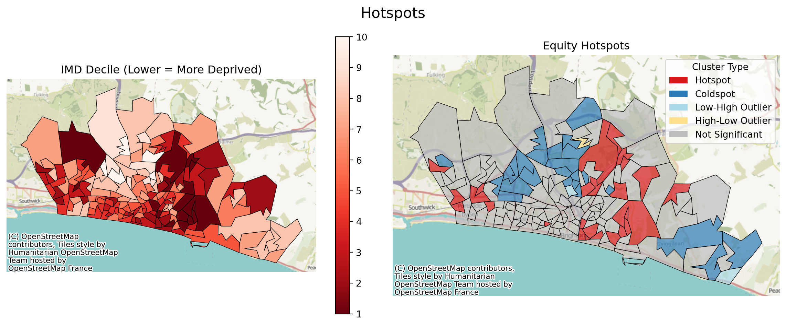
# First we create blank subplots
fig, axes = plt.subplots(1, 2, figsize=(12, 5))
# Now we pass the relevant axis into our plot_hotspots function
problem.plot_region_geometry_layer(plot_demand=True, ax=axes[0], cmap="RdBu_r")
problem.plot_hotspots(hotspots_df=hotspots_df, interactive=False, ax=axes[1])
# Set the title for each
axes[0].set_title("Raw Demand")
axes[1].set_title("Demand Hotspots")
# Set an overall title
fig.suptitle("Hotspots", fontsize=16)
plt.tight_layout()
plt.show()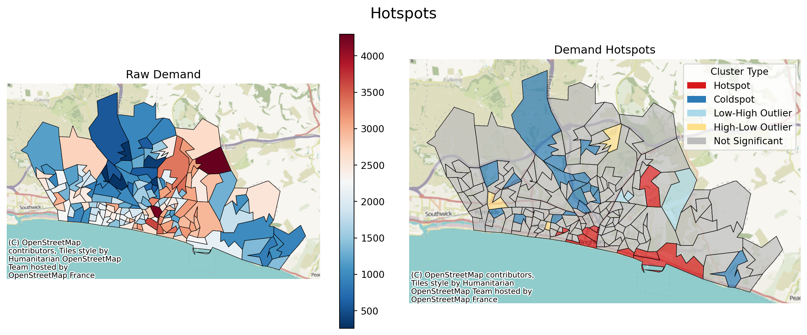
Considering Demand and Deprivation Together
While these things are often useful to consider individually, they can be even more interesting to consider together.
We can run this work with a ‘what’ of ‘demand_equity’.
hotspots_combined_df = problem.get_hotspots(what="demand_equity")
hotspots_combined_df/__w/lokigi/lokigi/lokigi/mixins/site_eda.py:363: UserWarning:
Using cached spatial weights.
| FID | LSOA11CD | LSOA11NM | LSOA11NMW | BNG_E | BNG_N | LONG | LAT | GlobalID | geometry | ... | demand | IMD15 | combined_score | demand_level | equity_level | attribute_typology | local_moran_i | p_value | quadrant | cluster_type | |
|---|---|---|---|---|---|---|---|---|---|---|---|---|---|---|---|---|---|---|---|---|---|
| 0 | 16356 | E01016849 | Brighton and Hove 026A | Brighton and Hove 026A | 529362 | 104513 | -0.16464 | 50.82570 | 2e95f9d0-9795-4cd4-83d1-3a40898b6c89 | POLYGON ((529551.999 104581, 529547.002 104555... | ... | 1843 | 5 | 0.174320 | Medium | Medium | Medium Demand / Medium Deprivation | 0.394300 | 0.081 | 1 | Not Significant |
| 1 | 16357 | E01016850 | Brighton and Hove 029A | Brighton and Hove 029A | 529926 | 104360 | -0.15669 | 50.82420 | 74a1b81a-ffc0-4c96-82ef-c63e7ec28eaf | POLYGON ((530066.027 104493.355, 529958.177 10... | ... | 2433 | 4 | 0.179468 | Medium | Medium | Medium Demand / Medium Deprivation | -0.101582 | 0.367 | 4 | Not Significant |
| 2 | 16358 | E01016851 | Brighton and Hove 029B | Brighton and Hove 029B | 529674 | 104404 | -0.16025 | 50.82465 | a24f39b6-85f2-4ac6-8af8-f8d205b14b58 | POLYGON ((529453.266 104354.713, 529547.002 10... | ... | 2041 | 5 | 0.196124 | Medium | Medium | Medium Demand / Medium Deprivation | -0.253056 | 0.266 | 4 | Not Significant |
| 3 | 16359 | E01016852 | Brighton and Hove 026B | Brighton and Hove 026B | 529680 | 104641 | -0.16008 | 50.82678 | 9d674ffc-b718-4555-b669-0a5e6dc98129 | POLYGON ((529787.909 104744.63, 529784.999 104... | ... | 2540 | 3 | 0.125537 | High | Low | High Demand / Low Deprivation | 0.025870 | 0.354 | 3 | Not Significant |
| 4 | 16360 | E01016853 | Brighton and Hove 026C | Brighton and Hove 026C | 529443 | 104770 | -0.16340 | 50.82799 | 7087f545-a012-4c31-afdb-73df930edc2b | POLYGON ((529461.706 104928.879, 529663.936 10... | ... | 2233 | 5 | 0.217267 | Medium | Medium | Medium Demand / Medium Deprivation | 0.502850 | 0.160 | 1 | Not Significant |
| ... | ... | ... | ... | ... | ... | ... | ... | ... | ... | ... | ... | ... | ... | ... | ... | ... | ... | ... | ... | ... | ... |
| 160 | 16516 | E01017010 | Brighton and Hove 017D | Brighton and Hove 017D | 536120 | 105803 | -0.06826 | 50.83575 | e99d0ceb-67dc-4d7b-ab1f-ab8b58230e95 | POLYGON ((536567.096 105821.386, 536031.682 10... | ... | 1064 | 8 | 0.154939 | Low | High | Low Demand / High Deprivation | -0.114335 | 0.279 | 4 | Not Significant |
| 161 | 16517 | E01017011 | Brighton and Hove 017E | Brighton and Hove 017E | 537345 | 105806 | -0.05088 | 50.83549 | d60da5d5-da96-4bed-a4e1-f93ffc876538 | POLYGON ((537990.001 104635.399, 537733.25 105... | ... | 2536 | 2 | 0.062658 | High | Low | High Demand / Low Deprivation | -0.010157 | 0.480 | 2 | Not Significant |
| 162 | 16518 | E01017012 | Brighton and Hove 017F | Brighton and Hove 017F | 535917 | 104786 | -0.07152 | 50.82666 | 91575aee-ce23-436e-b85d-d0a94dbcef74 | POLYGON ((536031.682 105223.601, 536625.001 10... | ... | 1800 | 6 | 0.211981 | Medium | Medium | Medium Demand / Medium Deprivation | 0.201758 | 0.333 | 1 | Not Significant |
| 163 | 32444 | E01033328 | Brighton and Hove 027F | Brighton and Hove 027F | 531208 | 104687 | -0.13838 | 50.82685 | f80f534f-bb85-49f8-9b67-730ecab28bad | POLYGON ((531414.796 104753.739, 531358 104504... | ... | 2323 | 3 | 0.113589 | Medium | Low | Medium Demand / Low Deprivation | -0.032642 | 0.381 | 2 | Not Significant |
| 164 | 32445 | E01033329 | Brighton and Hove 027G | Brighton and Hove 027G | 530964 | 105059 | -0.14171 | 50.83025 | 7e8f3fd7-9565-455b-9550-5fac52fcb7f4 | POLYGON ((531226.813 104838.69, 530999 104730,... | ... | 2780 | 4 | 0.208127 | High | Medium | High Demand / Medium Deprivation | -0.313910 | 0.234 | 4 | Not Significant |
165 rows × 21 columns
We can see this has created a new ‘attribute_typology’ column that classifies these into groups.
First, we’ll just plot the hotspots as before.
problem.plot_hotspots(hotspots_df=hotspots_combined_df, interactive=False)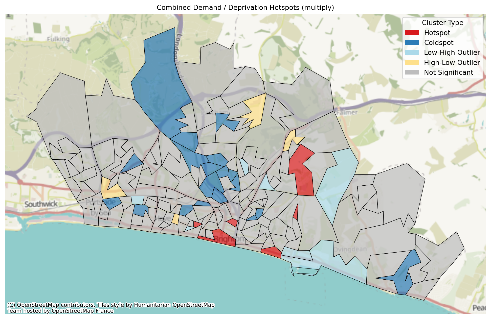
We can also explore the same plot interactively.
problem.plot_hotspots(hotspots_df=hotspots_combined_df, interactive=True)Make this Notebook Trusted to load map: File -> Trust Notebook
Let’s see our three pltos side by side.
# First we create blank subplots
fig, axes = plt.subplots(1, 3, figsize=(18, 6))
# Now we pass the relevant axis into our plot_hotspots function
problem.plot_hotspots(hotspots_df=hotspots_equity_df, interactive=False, ax=axes[0])
problem.plot_hotspots(hotspots_df=hotspots_df, interactive=False, ax=axes[1])
problem.plot_hotspots(hotspots_df=hotspots_combined_df, interactive=False, ax=axes[2])
# Set the title for each
axes[0].set_title("Equity")
axes[1].set_title("Demand")
# Set an overall title
fig.suptitle("Hotspots", fontsize=16)
plt.tight_layout()
plt.show()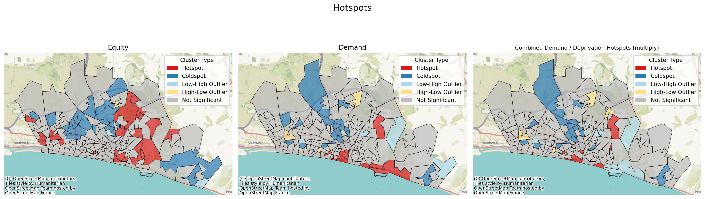
Quadrant Plots
We can also run another type of plot that is specifically interested in the quadrants (or ninths).
By default, ninths are used as this produces a useful range of detail. Here, areas of both high demand and high deprivation - determined as being in the top third for both - are highlighted in a bright colour.
Medium demand and high deprivation, or high demand and medium deprivation, are classified as being of some concern, so are highlighted in yellow, and so on.
problem.plot_quadrant_map(figsize=(12, 7));/__w/lokigi/lokigi/lokigi/mixins/site_eda.py:363: UserWarning:
Using cached spatial weights.
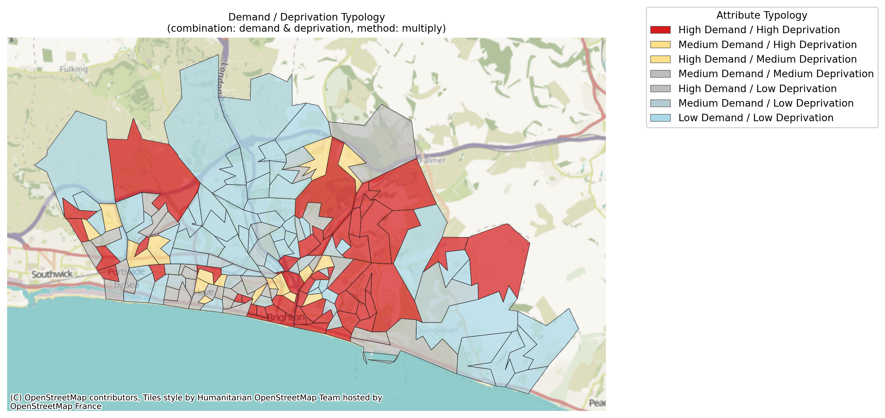
Alternatively, we can look at quadrants, where high demand = above average demand, and similarly for deprivation. However, this then gets combined with a measure of significance, so only areas of the most significance are highlighted.
problem.plot_quadrant_map(significance_threshold=0.1, figsize=(12, 7), n_bins=2);/__w/lokigi/lokigi/lokigi/mixins/site_eda.py:363: UserWarning:
Using cached spatial weights.
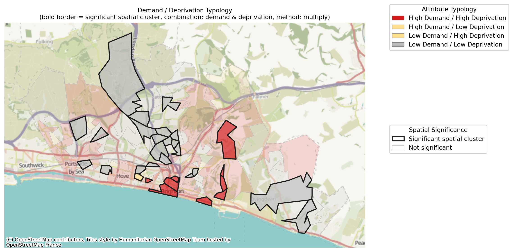
Let’s now do an even more complex layout to combine two hotspot plots with a quadrant map.
# Create a 2x2 grid
fig = plt.figure(figsize=(16, 10))
gs = fig.add_gridspec(2, 2)
# Top row
ax1 = fig.add_subplot(gs[0, 0])
ax2 = fig.add_subplot(gs[0, 1])
# Bottom row spanning both columns
ax3 = fig.add_subplot(gs[1, :])
# Plot
problem.plot_hotspots(
hotspots_df=hotspots_equity_df,
interactive=False,
ax=ax1,
)
problem.plot_hotspots(
hotspots_df=hotspots_df,
interactive=False,
ax=ax2,
)
problem.plot_quadrant_map(ax=ax3)
# Titles
ax1.set_title("Equity")
ax2.set_title("Demand")
# Overall title
fig.suptitle("Hotspots", fontsize=16)
plt.tight_layout()
plt.show()/__w/lokigi/lokigi/lokigi/mixins/site_eda.py:363: UserWarning:
Using cached spatial weights.
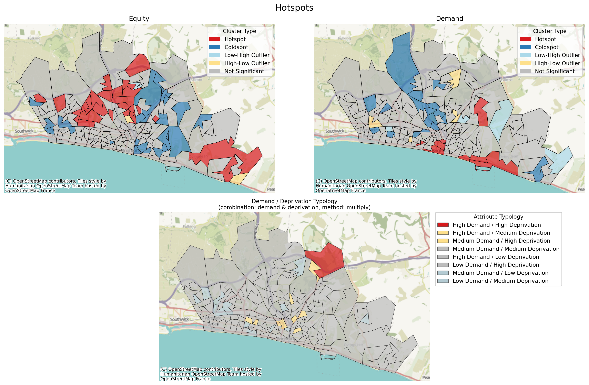
And we can repeat this for our 2-bin quadrant.
# Create a 2x2 grid
fig = plt.figure(figsize=(16, 10))
gs = fig.add_gridspec(2, 2)
# Top row
ax1 = fig.add_subplot(gs[0, 0])
ax2 = fig.add_subplot(gs[0, 1])
# Bottom row spanning both columns
ax3 = fig.add_subplot(gs[1, :])
# Plot
problem.plot_hotspots(
hotspots_df=hotspots_equity_df,
interactive=False,
ax=ax1,
)
problem.plot_hotspots(
hotspots_df=hotspots_df,
interactive=False,
ax=ax2,
)
problem.plot_quadrant_map(n_bins=2, significance_threshold=0.1, ax=ax3)
# Titles
ax1.set_title("Equity")
ax2.set_title("Demand")
# Overall title
fig.suptitle("Hotspots", fontsize=16)
plt.tight_layout()
plt.show()/__w/lokigi/lokigi/lokigi/mixins/site_eda.py:363: UserWarning:
Using cached spatial weights.
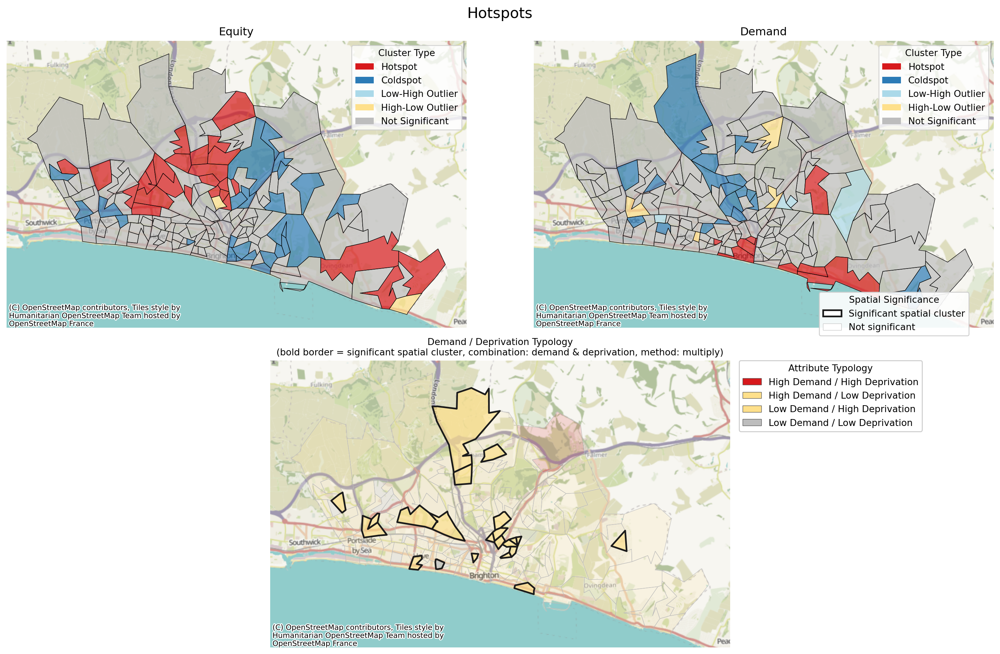
Evaluating hotspots with our solution
Once we solve, we can identify another type of hotspot:
- High deprivation and high travel times (and other associated quadrants or ninths like low deprivation and low travel times)
- High demand and high travel times (and other associated quadrants or ninths like low demand and low travel times)
solution = problem.solve(p=3)solution.plot_n_best_combinations(3);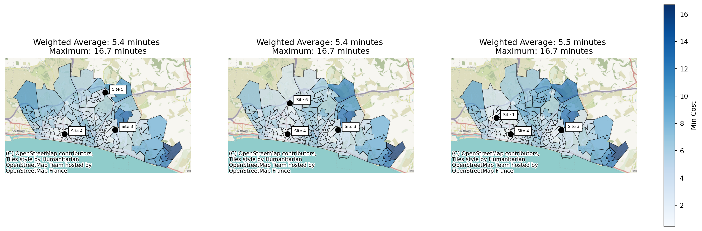
As a reminder, we can access the solutions like this:
solution.show_solutions(n_best=3)| solution_rank | site_names | site_indices | coverage_threshold | weighted_average | unweighted_average | 90th_percentile | max | total_cost | proportion_within_coverage_threshold | ... | gap_absolute_weighted | gap_relative_weighted | avg_lower_third_bins | avg_middle_third_bins | avg_upper_third_bins | inter_tertile_ratio | gap_absolute_description | gap_relative_description | inter_tertile_description | problem_df | |
|---|---|---|---|---|---|---|---|---|---|---|---|---|---|---|---|---|---|---|---|---|---|
| 0 | 1 | [Site 3, Site 4, Site 5] | [2, 3, 4] | None | 5.37 | 5.45 | 8.50 | 16.69 | NaN | 0.0 | ... | 2.25 | 1.53 | 5.41 | 5.08 | 5.73 | 0.94 | Spread of 2.2 units between best and worst groups | Significant Disparity (Worst group travels 53%... | Slightly Progressive (Most deprived travel 6% ... | LSOA Site 3 Sit... |
| 1 | 2 | [Site 3, Site 4, Site 6] | [2, 3, 5] | None | 5.38 | 5.36 | 8.06 | 16.69 | NaN | 0.0 | ... | 2.47 | 1.63 | 5.50 | 4.97 | 5.54 | 0.99 | Spread of 2.5 units between best and worst groups | Significant Disparity (Worst group travels 63%... | Balanced (Macro travel times are broadly equal) | LSOA Site 3 Sit... |
| 2 | 3 | [Site 1, Site 3, Site 4] | [0, 2, 3] | None | 5.53 | 5.67 | 9.36 | 16.69 | NaN | 0.0 | ... | 3.65 | 2.00 | 5.57 | 5.09 | 7.10 | 0.79 | Spread of 3.6 units between best and worst groups | Significant Disparity (Worst group travels 100... | Slightly Progressive (Most deprived travel 21%... | LSOA Site 1 Sit... |
3 rows × 24 columns
And we can then access individual detailed solution dataframes with per-region travel times like this:
solution.show_solutions(n_best=1)["problem_df"].iloc[0]| LSOA | Site 3 | Site 4 | Site 5 | min_cost | selected_site | within_threshold | demand | LSOA11NM | IMD15 | IMD15_raw | |
|---|---|---|---|---|---|---|---|---|---|---|---|
| 0 | Brighton and Hove 027E | 7.404833 | 8.197500 | 10.125667 | 7.404833 | Site 3 | NaN | 3627 | Brighton and Hove 027E | 2 | 5040 |
| 1 | Brighton and Hove 027F | 8.626167 | 9.351167 | 9.649500 | 8.626167 | Site 3 | NaN | 2323 | Brighton and Hove 027F | 3 | 9104 |
| 2 | Brighton and Hove 027A | 8.633000 | 6.840000 | 11.353833 | 6.840000 | Site 4 | NaN | 2596 | Brighton and Hove 027A | 3 | 7483 |
| 3 | Brighton and Hove 029E | 11.006000 | 6.328667 | 12.193000 | 6.328667 | Site 4 | NaN | 3132 | Brighton and Hove 029E | 2 | 6218 |
| 4 | Brighton and Hove 029D | 10.970000 | 5.216667 | 12.408333 | 5.216667 | Site 4 | NaN | 2883 | Brighton and Hove 029D | 3 | 7018 |
| ... | ... | ... | ... | ... | ... | ... | ... | ... | ... | ... | ... |
| 160 | Brighton and Hove 012A | 18.468500 | 8.652667 | 10.433667 | 8.652667 | Site 4 | NaN | 2497 | Brighton and Hove 012A | 3 | 8891 |
| 161 | Brighton and Hove 005C | 16.804000 | 9.490000 | 8.769167 | 8.769167 | Site 5 | NaN | 2570 | Brighton and Hove 005C | 2 | 5951 |
| 162 | Brighton and Hove 012B | 18.876667 | 8.952500 | 10.841833 | 8.952500 | Site 4 | NaN | 2051 | Brighton and Hove 012B | 3 | 8814 |
| 163 | Brighton and Hove 005A | 18.432167 | 11.068500 | 10.397333 | 10.397333 | Site 5 | NaN | 1164 | Brighton and Hove 005A | 7 | 21094 |
| 164 | Brighton and Hove 005B | 17.232333 | 9.918333 | 9.197500 | 9.197500 | Site 5 | NaN | 1097 | Brighton and Hove 005B | 7 | 20761 |
165 rows × 11 columns
As before, we can still plot our standard hotspot maps.
# Create a 2x2 grid
fig = plt.figure(figsize=(16, 8))
gs = fig.add_gridspec(2, 2)
# Top row
ax1 = fig.add_subplot(gs[0, 0])
ax2 = fig.add_subplot(gs[0, 1])
# Bottom row spanning both columns
ax3 = fig.add_subplot(gs[1, :])
# Plot
solution.plot_hotspots(
interactive=False,
what="equity",
ax=ax1,
)
solution.plot_hotspots(
what="demand",
interactive=False,
ax=ax2,
)
solution.plot_quadrant_map(ax=ax3)
# Titles
ax1.set_title("Equity")
ax2.set_title("Demand")
# Overall title
fig.suptitle("Hotspots", fontsize=16)
plt.tight_layout()
plt.show()/__w/lokigi/lokigi/lokigi/mixins/site_eda.py:363: UserWarning:
Using cached spatial weights.
/__w/lokigi/lokigi/lokigi/mixins/site_eda.py:363: UserWarning:
Using cached spatial weights.
/__w/lokigi/lokigi/lokigi/mixins/site_eda.py:363: UserWarning:
Using cached spatial weights.
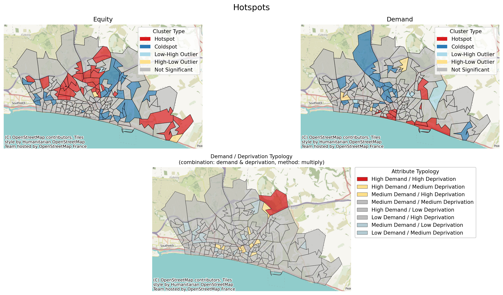
But we also have two more options available to us:
- travel_equity
- travel_demand
# Create a 2x2 grid
fig = plt.figure(figsize=(16, 8))
gs = fig.add_gridspec(2, 2)
# Top row
ax1 = fig.add_subplot(gs[0, 0])
ax2 = fig.add_subplot(gs[0, 1])
# Bottom row spanning both columns
ax3 = fig.add_subplot(gs[1, :])
solution.plot_best_combination(ax=ax1, cmap="RdBu_r")
problem.plot_region_geometry_layer(plot_equity=True, ax=ax2, plot_region_of_interest_only=True, cmap="Reds_r")
solution.plot_quadrant_map(what="travel_equity", ax=ax3)
# Titles
ax1.set_title("Travel Times")
ax2.set_title("Equity")
# Overall title
fig.suptitle("Hotspots", fontsize=16)
plt.tight_layout()
plt.show()/__w/lokigi/lokigi/lokigi/mixins/site_eda.py:363: UserWarning:
Using cached spatial weights.
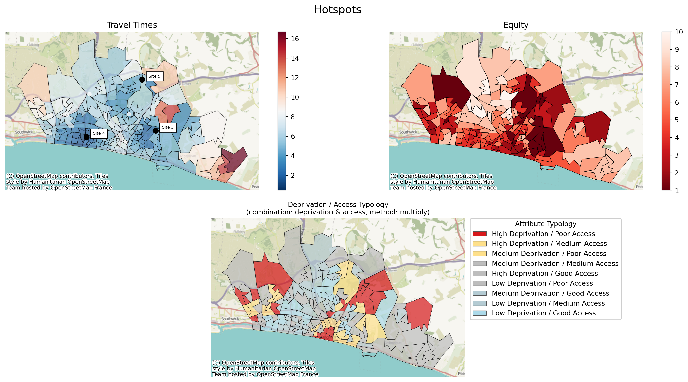
# Create a 2x2 grid
fig = plt.figure(figsize=(16, 8))
gs = fig.add_gridspec(2, 2)
# Top row
ax1 = fig.add_subplot(gs[0, 0])
ax2 = fig.add_subplot(gs[0, 1])
# Bottom row spanning both columns
ax3 = fig.add_subplot(gs[1, :])
solution.plot_best_combination(ax=ax1, cmap="RdBu_r")
problem.plot_region_geometry_layer(plot_demand=True, ax=ax2, plot_region_of_interest_only=True, cmap="Reds")
solution.plot_quadrant_map(what="travel_demand", ax=ax3)
# Titles
ax1.set_title("Travel Times")
ax2.set_title("Demand")
# Overall title
fig.suptitle("Hotspots", fontsize=16)
plt.tight_layout()
plt.show()/__w/lokigi/lokigi/lokigi/mixins/site_eda.py:363: UserWarning:
Using cached spatial weights.
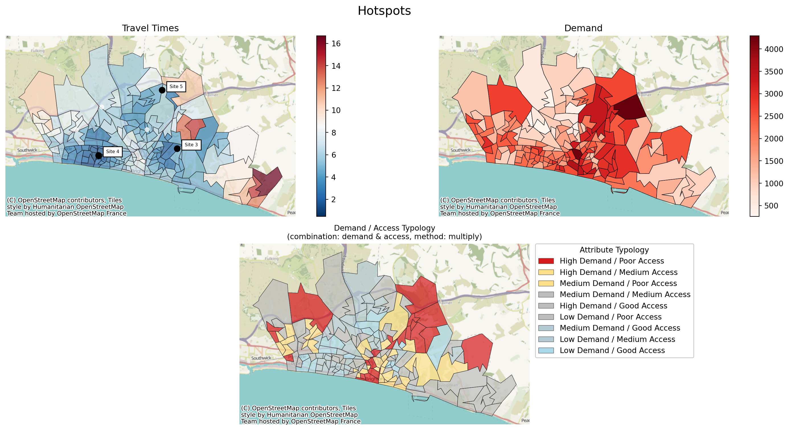
Repeating for a larger region
Note that in this dataset, we don’t have any demand.
Therefore, demand is set to be equal across all regions.
problem = SiteProblem()
problem.add_sites(
"../../../sample_data/devon_mius.geojson",
candidate_id_col="Facility_Name"
)
problem.add_region_geometry_layer(
"https://github.com/hsma-programme/h6_3c_interactive_plots_travel/raw/main/h6_3c_interactive_plots_travel/example_code/LSOA_2011_Boundaries_Super_Generalised_Clipped_BSC_EW_V4.geojson",
common_col="LSOA11NM"
)
problem.add_travel_matrix(
travel_matrix_df="../../../sample_data/devon_miu_travel_matrix_public_transport_extended.csv",
source_col="from_id",
unit="minutes",
)
problem.add_equity_data(
"../../../sample_data/Index_of_Multiple_Deprivation_(Dec_2015)_Lookup_in_England.csv",
equity_col="IMD15",
common_col="LSOA11NM",
label="Indices of Multiple Deprivation",
continuous_measure=True,
reverse=False
)# First we create blank subplots
fig, axes = plt.subplots(1, 2, figsize=(12, 5))
# Now we pass the relevant axis into our plot_hotspots function
problem.plot_region_geometry_layer(plot_equity=True, ax=axes[0], plot_region_of_interest_only=True, cmap="Reds_r", show_basemap=False)
problem.plot_hotspots(interactive=False, what="equity", ax=axes[1], significance_threshold=0.1, show_basemap=False)
# Set the title for each
axes[0].set_title("IMD Decile (Lower = More Deprived)")
axes[1].set_title("IMD Decile (Hotspots = Deprived, Coldspots = Less Deprived)")
# Set an overall title
fig.suptitle("Hotspots", fontsize=16)
plt.tight_layout()
plt.show()/__w/lokigi/lokigi/lokigi/problem.py:475: UserWarning:
No demand data provided; estimating region of interest.
/__w/lokigi/lokigi/lokigi/mixins/site_eda.py:147: FutureWarning:
`use_index` defaults to False but will default to True in future. Set True/False directly to control this behavior and silence this warning
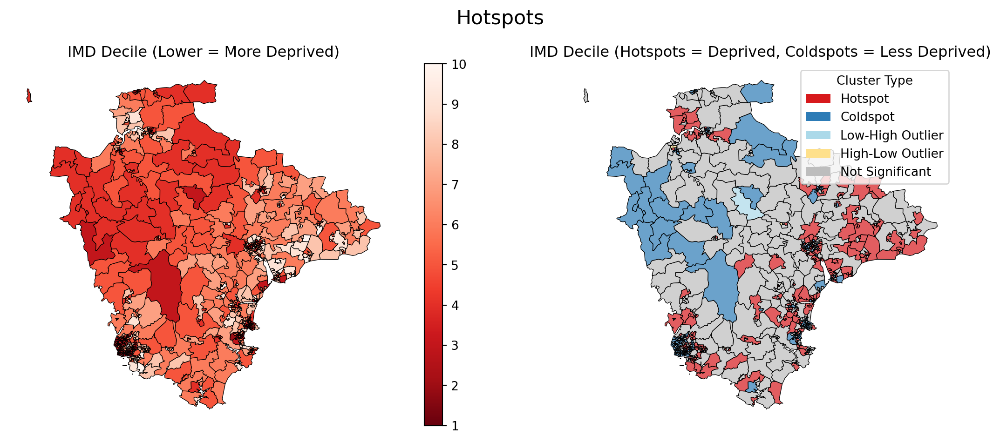
Given the larger number of small LSOAs in the more densely populated areas, this is where the interactive maps can prove more useful.
problem.plot_hotspots(interactive=True, what="equity", ax=axes[1], significance_threshold=0.1, show_basemap=False)/__w/lokigi/lokigi/lokigi/mixins/site_eda.py:363: UserWarning:
Using cached spatial weights.
Make this Notebook Trusted to load map: File -> Trust Notebook
We’ll solve for a number of sites.
solution = problem.solve(p=3)And we will look for hospots of high deprivation and high travel times.
# Create a 2x2 grid
fig = plt.figure(figsize=(14, 12))
gs = fig.add_gridspec(2, 2)
# Top row
ax1 = fig.add_subplot(gs[0, 0])
ax2 = fig.add_subplot(gs[0, 1])
# Bottom row spanning both columns
ax3 = fig.add_subplot(gs[1, :])
solution.plot_best_combination(ax=ax1, cmap="RdBu_r")
problem.plot_region_geometry_layer(plot_equity=True, ax=ax2, plot_region_of_interest_only=True, cmap="Reds_r")
solution.plot_quadrant_map(what="travel_equity", ax=ax3)
# Titles
ax1.set_title("Travel Times")
ax2.set_title("Equity")
# Overall title
fig.suptitle("Hotspots", fontsize=16)
plt.tight_layout()
plt.show()/__w/lokigi/lokigi/lokigi/mixins/site_eda.py:363: UserWarning:
Using cached spatial weights.
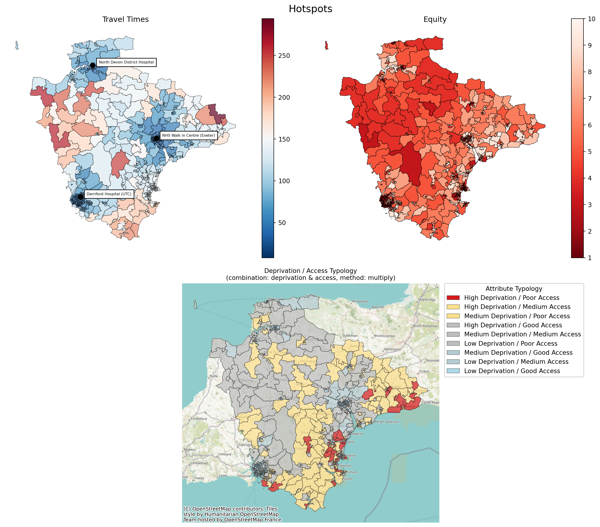
We can also compare the effect of a 2x2 vs 3x3 plot.
# Create a 2x2 grid
fig = plt.figure(figsize=(20, 10), layout="constrained")
gs = fig.add_gridspec(1, 2)
# Top row
ax1 = fig.add_subplot(gs[0, 0])
ax2 = fig.add_subplot(gs[0, 1])
solution.plot_quadrant_map(what="travel_equity", ax=ax1, n_bins=2, significance_threshold=0.05, legend_loc="upper right")
solution.plot_quadrant_map(what="travel_equity", ax=ax2, n_bins=3, legend_loc="upper right")
ax1.set_title("Four bins with strict significance threshold: above median travel time = poor access")
ax2.set_title("Nine bins with strict significance threshold: above upper third of travel time = poor access")
plt.show()/__w/lokigi/lokigi/lokigi/mixins/site_eda.py:363: UserWarning:
Using cached spatial weights.
/__w/lokigi/lokigi/lokigi/mixins/site_eda.py:363: UserWarning:
Using cached spatial weights.
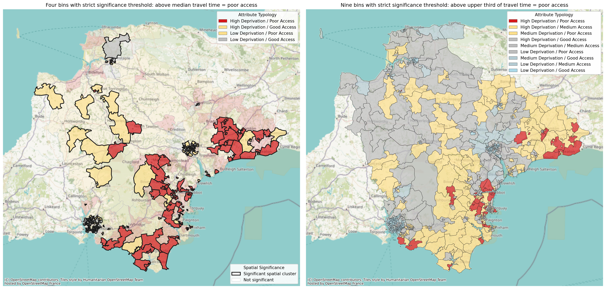
And once again, we can opt for an interactive map.
solution.plot_quadrant_map(what="travel_equity", interactive=True)/__w/lokigi/lokigi/lokigi/mixins/site_eda.py:363: UserWarning:
Using cached spatial weights.
Make this Notebook Trusted to load map: File -> Trust Notebook
We can also explore the underlying data.
df = solution.get_hotspots(what="travel_equity")
df/__w/lokigi/lokigi/lokigi/mixins/site_eda.py:363: UserWarning:
Using cached spatial weights.
| FID | LSOA11CD | LSOA11NM | LSOA11NMW | BNG_E | BNG_N | LONG | LAT | GlobalID | geometry | ... | IMD15 | _travel_norm | combined_score | equity_level | access_level | attribute_typology | local_moran_i | p_value | quadrant | cluster_type | |
|---|---|---|---|---|---|---|---|---|---|---|---|---|---|---|---|---|---|---|---|---|---|
| 0 | 14568 | E01015023 | Plymouth 003A | Plymouth 003A | 247552 | 60231 | -4.14743 | 50.42208 | 3a1814a2-ceaf-47cd-8c29-72c900d3f53c | POLYGON ((247909.169 60253.906, 248038.775 601... | ... | 2 | 0.073427 | 0.008159 | Low | Good | Low Deprivation / Good Access | -0.087760 | 0.384 | 2 | Not Significant |
| 1 | 14569 | E01015024 | Plymouth 004A | Plymouth 004A | 246294 | 60368 | -4.16518 | 50.42299 | 5a713981-93f5-466a-b48f-d90e6216d857 | POLYGON ((246946.495 60828.934, 246985.66 6080... | ... | 5 | 0.143357 | 0.063714 | Medium | Good | Medium Deprivation / Good Access | 0.689497 | 0.002 | 3 | Coldspot |
| 2 | 14570 | E01015025 | Plymouth 001A | Plymouth 001A | 249393 | 60200 | -4.12152 | 50.42228 | 4764160d-79bd-450d-bc32-271f65347d50 | POLYGON ((248598.949 60607.107, 249502.902 605... | ... | 9 | 0.048951 | 0.043512 | High | Good | High Deprivation / Good Access | 0.753986 | 0.046 | 3 | Coldspot |
| 3 | 14571 | E01015026 | Plymouth 003B | Plymouth 003B | 246634 | 60078 | -4.16028 | 50.42047 | bbcb84fc-7d49-433b-8e12-c66ef06c5982 | POLYGON ((246915.514 59572.436, 246519.33 5983... | ... | 2 | 0.118881 | 0.013209 | Low | Good | Low Deprivation / Good Access | 0.848102 | 0.026 | 3 | Coldspot |
| 4 | 14572 | E01015027 | Plymouth 002A | Plymouth 002A | 248602 | 59865 | -4.13251 | 50.41907 | d308d90b-0dbb-4db1-bf09-f7667767a862 | POLYGON ((249359.866 59750.857, 249064.408 593... | ... | 6 | 0.055944 | 0.031080 | Medium | Good | Medium Deprivation / Good Access | 0.506105 | 0.050 | 3 | Not Significant |
| ... | ... | ... | ... | ... | ... | ... | ... | ... | ... | ... | ... | ... | ... | ... | ... | ... | ... | ... | ... | ... | ... |
| 702 | 32366 | E01033232 | Exeter 011F | Exeter 011F | 295694 | 91608 | -3.47881 | 50.71470 | c8475b67-c262-4380-918e-9eeb1bb9fc23 | POLYGON ((296030 91719.999, 295641.839 91301.8... | ... | 8 | 0.083916 | 0.065268 | High | Good | High Deprivation / Good Access | 0.340291 | 0.250 | 3 | Not Significant |
| 703 | 32367 | E01033233 | Exeter 001F | Exeter 001F | 291624 | 94781 | -3.53737 | 50.74248 | 0fee6c51-0794-46fe-b5ea-ec792df399ac | POLYGON ((292671.985 94446.666, 292666.919 943... | ... | 9 | 0.055944 | 0.049728 | High | Good | High Deprivation / Good Access | 0.671995 | 0.011 | 3 | Coldspot |
| 704 | 32368 | E01033234 | Exeter 011G | Exeter 011G | 296314 | 91965 | -3.47013 | 50.71802 | 7d24b6bb-b0ec-4797-ac0a-7f8c1af362fd | POLYGON ((296880.97 93135.099, 296759 91350.39... | ... | 9 | 0.108392 | 0.096348 | High | Good | High Deprivation / Good Access | 0.243212 | 0.077 | 3 | Not Significant |
| 705 | 32369 | E01033235 | Exeter 015E | Exeter 015E | 296469 | 88389 | -3.46693 | 50.68590 | 899e780a-ef4c-420d-b3c0-f4d448d69e4b | MULTIPOLYGON (((296254.69 87985.106, 296244.76... | ... | 9 | 0.111888 | 0.099456 | High | Good | High Deprivation / Good Access | -0.042839 | 0.336 | 2 | Not Significant |
| 706 | 32370 | E01033236 | Exeter 015F | Exeter 015F | 297029 | 87673 | -3.45880 | 50.67956 | c4999b02-c004-4d4d-a953-e9ab22f88a00 | POLYGON ((297122.02 88128.081, 297203.6 87943.... | ... | 9 | 0.125874 | 0.111888 | High | Good | High Deprivation / Good Access | -0.134164 | 0.100 | 2 | Not Significant |
707 rows × 23 columns
df.groupby("attribute_typology")[["IMD15", "min_cost"]].mean().round(1)| IMD15 | min_cost | |
|---|---|---|
| attribute_typology | ||
| High Deprivation / Good Access | 8.7 | 33.6 |
| High Deprivation / Medium Access | 8.8 | 81.5 |
| High Deprivation / Poor Access | 8.4 | 135.3 |
| Low Deprivation / Good Access | 2.6 | 36.6 |
| Low Deprivation / Medium Access | 3.2 | 83.1 |
| Low Deprivation / Poor Access | 3.0 | 145.8 |
| Medium Deprivation / Good Access | 6.0 | 32.4 |
| Medium Deprivation / Medium Access | 6.0 | 83.9 |
| Medium Deprivation / Poor Access | 5.8 | 149.7 |